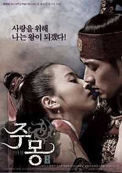

2006
2006 Motto: "Eran av avslutad avveckling av modellen för Guds Försyn och ideal om fred i himlen och på jorden."
Rev. Sun Myung Moon - TRUE FAMILY RESURRECTION AND WORLD LIBERATION -
SANN FAMILJEUPPSTÅNDELSE OCH VÄRLDSBEFRIELSE
Far känner att om fjorton år kommer allt att vara avklarat.
Det är år 2006. Allt kommer att vara avklarat.
Ref: 19th April
1992... Full text!
Peace King Coronation Ceremony - Kröningsceremoni för fredskonungen, Korea June 2006
Den första engelska versionen av Cheon Seong Gyeong - version 2006;(tal fram till och med 1999) publicerad.
14 sept Tillkännagivande att böner hörefter avslutas med "Aju" istället för "Amen" Cheong Jeong Gung Palace, Cheongpyeong
Sang Hun Lee pres. av Unification Thought Institute, ger ut boken NEW ESSENTIALS OF UNIFICATION THOUGHT - HEAD-WING THOUGHT
Världen:
-
mars Wikileaks grundas. Ett dolt webnät som (2010)
avslöjar statshemligheter om kriget i Afghanistan.
SMM 2005 "The Sun at High Noon! - Solen i zenith" = ALLT AVSLÖJAS! - den 8 oktober 2006 valdes Ban Ki-moon enhälligt av FN:s säkerhetsråd till Kofi Annans efterträdare som generalsekreterare. Den 13 oktober godkändes han av FN:s generalförsamling till ny generalsekreterare för FN. Den 14 december 2006 svors han in av Sheikha Haya Rashed al Khalifa för generalförsamlingen. Han poängterade då att han ser det som sin viktigaste uppgift att stärka FN:s tre pelare: säkerhet, utveckling och mänskliga rättigheter.
- "The Secret" en bästsäljande bok för självhjälp publiceras 2006 av Rhonda Byrne, baserad på den tidigare filmen med samma namn. Det är baserat på tron på attraktionslagen - Law of Attraction, som hävdar att tankar kan direkt förändra en persons liv. Boken har sålts 30 miljoner exemplar över hela världen och översatts till 50 språk.

Jumong (Koreanska)
ett historiskt drama som sändes på SydKoreas MBC televisionsnät.
Ursprungligen vara 60 episoder lång, beslöt MBC att utvidga det till 81 på grund av dess popularitet.
Den skildrar livet på Jumong Taewang, (grundare av konungadömet Goguryeo). Få detaljer har hittats i de faktiska historiska uppgifter om Jumong så många konstnärliga detaljer har tänkts fram. De fantastiska detaljerna i den ursprungliga legenden om Jumong har ersatts med händelser mer förankrade i verkligheten, till exempel den som rör hans födelse. Det anses också vara en stor del av "Koreanska vågen" ("Hallyu", globala intresset för sydkoreansk populärkultur).
Jumong fick högsta ratingen av alla Koreanska dramer under 2006 i Korea.
Boken
"Mission Butterfly" publicerad 2006.
Testimonies av underjordisk missionsaktivitet i Öststaterna 1980-1992.
Den officiella bostaden i Hannam-dong Seoul, där Sanna föräldrars kärlek och närvaro fortfarande finns kvar eftersom de bodde där från 1983 till 2006, har återinvigts som en gästhus.